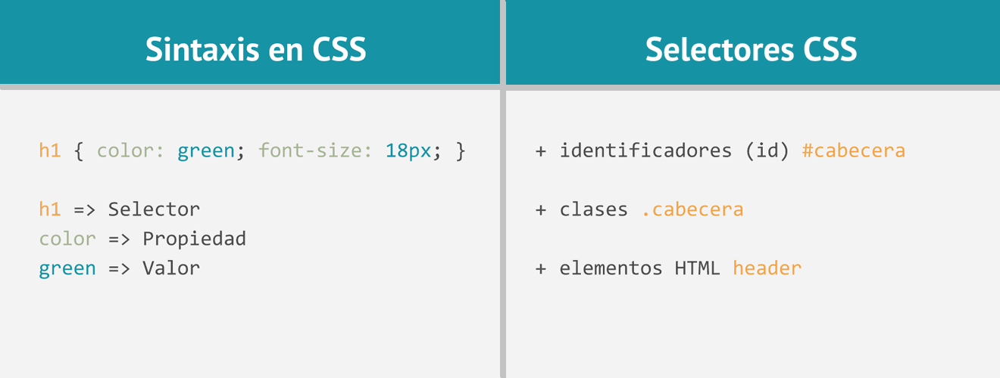

El proposito del sitio es dinamizar las estrategias de
aprendizajes el cual constituyen objetos virtuales para un mayor conocimiento hacerca de Sintaxis y Selectores CSS,
Interacción Humano Ordenador.
Sintaxis y Selectores CSS
"Sintaxis:
Es un conjunto de reglas CSS consta de un selector y un bloque de declaración,
siempre termina con un punto y coma, y los bloques de declaraciones están rodeados por llaves.
Selectores:
Se utilizan para "find" (o seleccionar) elementos HTML en función de su nombre de elemento, de la identificación, clase, atributo, y mucho más".
Sirvent Collado, L., & Luján-Mora, S. (2013). iDESWEB: Zen Coding para HTML y CSS. iDESWEB.

Interacción Humano Ordenador
"La creatividad humana especialmente en los inicios de la ciencia informática diversos visionarios realizaron proyecciones imaginarias sobre lo que podrían llegar a ser los ordenadores. —El estado del arte de la tecnología: a menudo actuando como límite al diseño. —El mercado de los ordenadores: directamente relacionado con el coste de los aparatos y que incide directamente tanto en el tipo de usuario como en el uso que hacen éstos".
García, L. F. J. (2002). Las asociaciones profesionales de archiveros. Revista del Archivo Nacional, 66(1-12), 49-69.